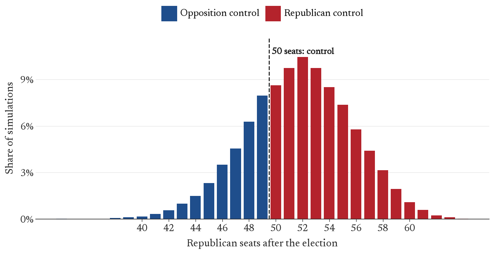
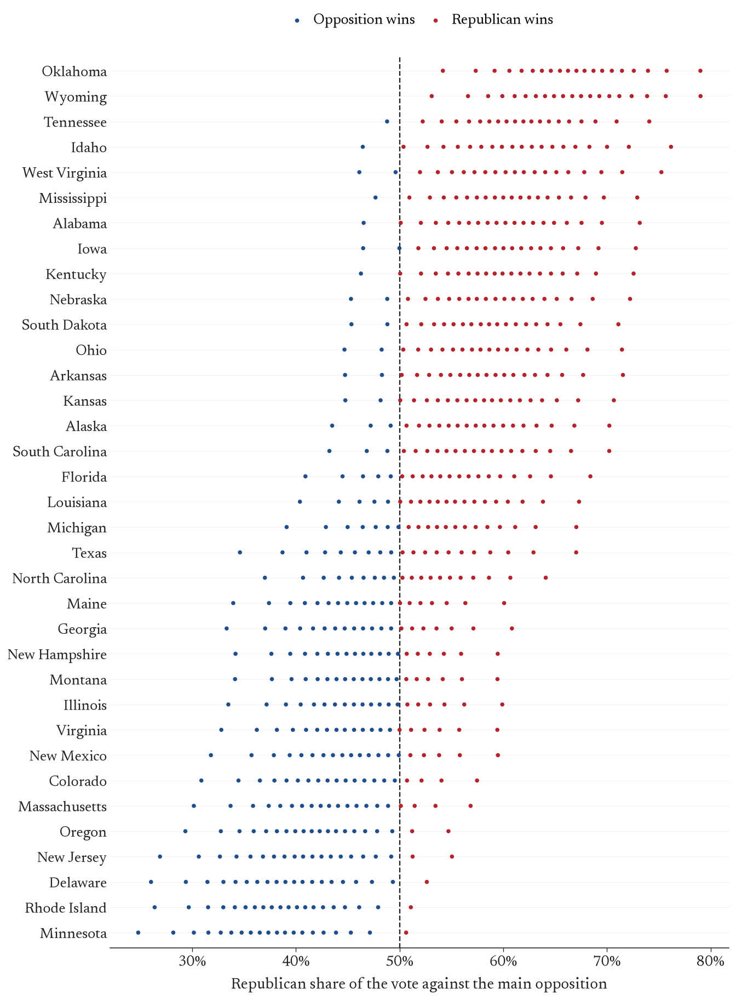
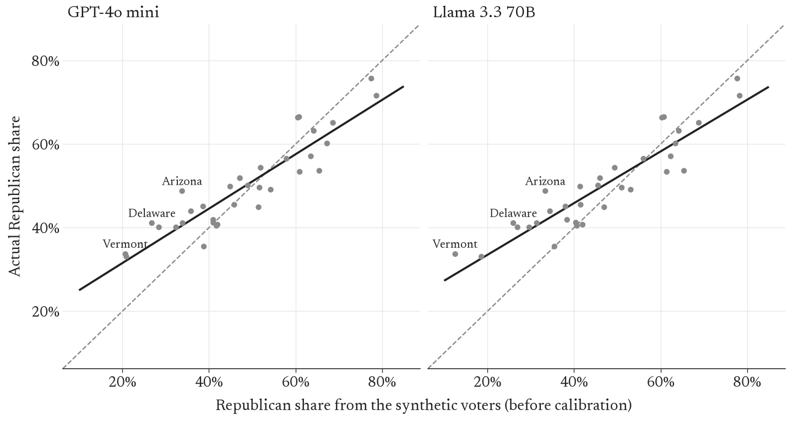
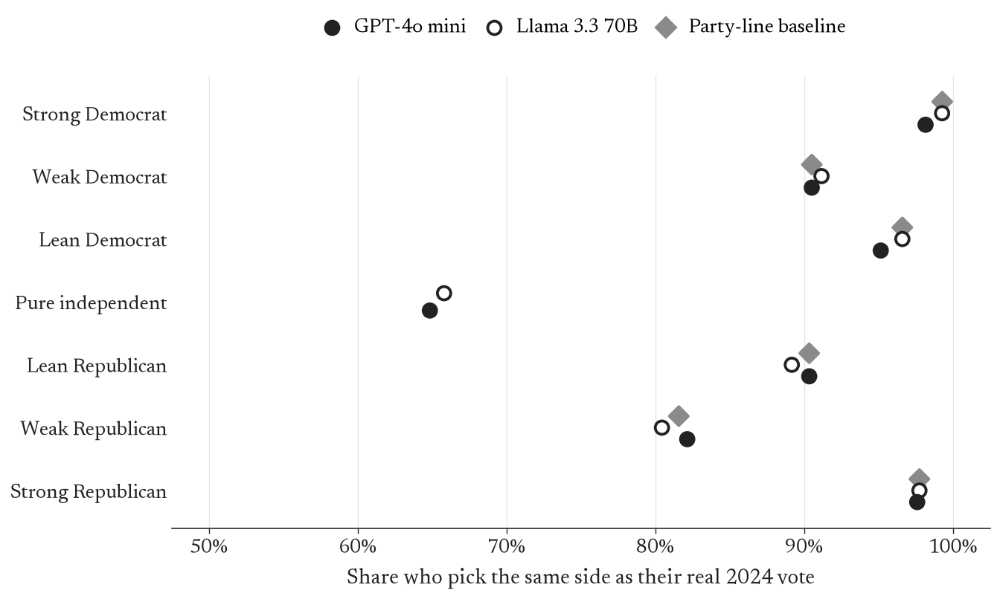
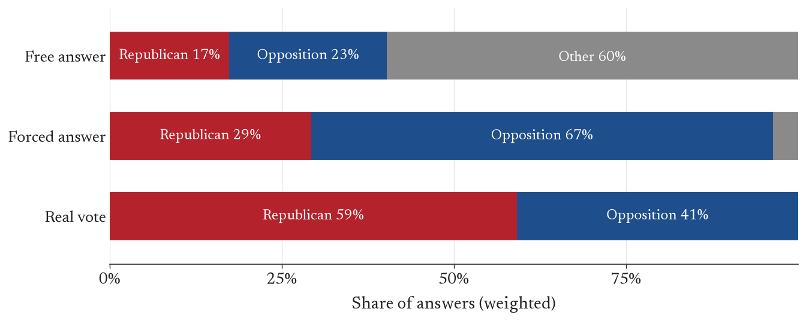
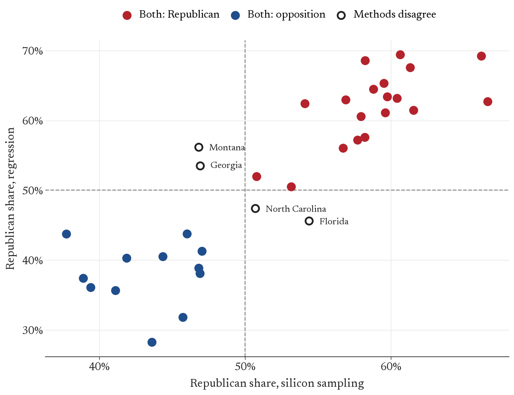
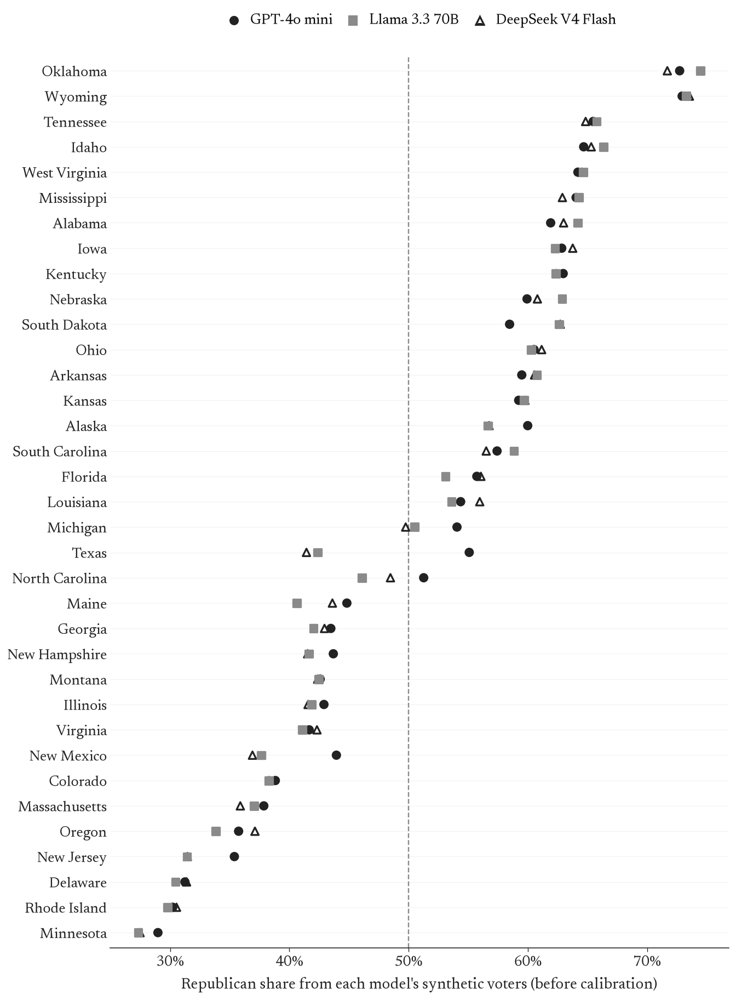

Synthetic Voters Give Republicans a 72% Chance of Keeping the Senate in 2026
A forecast of the 35 U.S. Senate races of 2026 built from synthetic survey responses: real voters’ profiles, answered by large language models
On this page we forecast all 35 races held on November 3 in the 2026 U.S. Senate elections. For each of 5,173 real respondents from the 2024 Cooperative Election Study, we wrote a short persona, including information such as their age, gender, race, state, education, income, party identification, ideology. We then fed each persona in the first person to three large language models (the third for comparison only) and asked how the persona would vote. Each model gave 5 answers per persona. These answers were then weighted to midterm voters, corrected using a 2024 backtest, and used for 10,000 simulated elections. This method is called silicon sampling (Argyle et al. 2023). We forecast a 72% chance that Republicans keep control, with a median of 52 Republican seats (80% interval 47 to 57), and favored in 21 out of 35 races.
The forecast
One full simulated election means that every one of the 35 races has a winner. We ran 10,000 of these simulated elections, and each one of them finished with a set number of Republican senators (31 Republican seats not up this year + races won by Republicans this year out of the 35). Each bar is one seat count (34 to 64). There is a total of 100 senate seats, and each bar counts simulations that ends with that number of Republican seats out of 100. So red bars are 50 or more Republican seats (Republicans control the senate), and blue bars are 49 or fewer (Democrats control the senate). If we add up all the red bars, we get 72% of our simulations, meaning that republicans keep control of the senate in approximately 7/10 simulations.
The most common outcomes are 52 Republican seats (10.4% of the simulations, also happens to be the median), 51 or 53 Republican seats (each 9.7% of the simulations), and an exact 50-50 tie (8.6% of the simulations). Republicans controlled the senate outright (51 or more seats) in 63% of the simulations. Republicans gained more seats compared to today (54 or more seats) in 33% of the simulations.
Notice that the spread of the histogram is very wide. The 80% interval is from 47 to 57, which means that about 8 out of every 10 simulations have Republicans hold between 47 and 57 seats. The full range is 34 to 64 seats. Why is our histogram so wide? For every simulated election we introduce four kinds of uncertainty. First is a national error shared by every state, where we draw one number from a normal distribution with a set standard deviation of 3 percentage points to determine how far the forecast is off nationwide. This matters because if state wise errors were independent, they would often cancel each other out and lead to a bunched-together histogram around 52. Moving every state in the same direction is also honest because real polling misses also tend to run the same way across states, like in 2016 and 2020 (Gelman et al. 2020). Second is a state error drawn for each separate race to capture local factors (effect of candidates, local issues, campaign success), it was measured as how far off the corrected forecast was for each state in the 2024 backtest and has a standard deviation of 4.7 percentage points. Third, in each simulation we pick one of two LLM models (GPT-4o mini or Llama 3.3 70B) and use its numbers for every state. And fourth, there is sampling error caused by the limited number of personas for each state (about 148 on average).

In this graph, each row is 1 race/1 state, so there are 35 rows total. Looking at the 50% line, a dot to the right is a Republican win, and a dot to the left is an opposition win. There are 20 dots on each row, and each dot is one equally likely outcome. So, what is a dot and where does it come from? For each state, we sort the 10,000 simulated results from most Democratic to most Republican and then cut this sorted list into 20 equal slices each with 500 simulations. Each dot is the middle of one of these slices and stands for about a 5% chance. This graph is a quantile dot plot, used by Kay et al. (2016) because people are better at judging chances by counting outcomes rather than looking at a probability curve or reading a numerical percentage. So, to get a rough chance that Republicans win, just count the red dots (the dots to the right of the 50% line). Just keep in mind that counting is only accurate to about 5 percentage points, and you can refer to Table 3 for exact chances.
Rows are sorted by median, so the most Republican races are at the top of the graph, and the most Democratic races are at the bottom. The closest races are the ones where the dots straddle 50%. The two closest races here are Texas and North Carolina, where there are 11 red dots out of 20, giving an approximate Republican chance of 55% (the actual exact chance is 54%). Michigan has 13 red dots, with a Republican chance of 67%, and is a seat that Republicans are favored to take from Democrats. Georgia has 7 red dots and a Republican chance of 33%; it is a Democratic seat where Republicans are behind.
How the forecast is built
CES 2024
real survey respondents
Persona
first-person backstory plus the 2026 ballot
3 LLMs
5 answers each
Weights
survey weight × midterm turnout (CES 2022)
Calibration
line fitted to the 2024 backtest
Simulation
10,000 elections
First, we created personas. We used the 2024 respondents in the cumulative CES file, which sets every year’s survey into one consistent format (Kuriwaki 2025). We included only respondents who live in the 35 states with a 2026 senate race, and randomly drew up to 150 respondents in each state (A few had fewer respondents and the minimum is 95). This process gave us a total of 5173 personas. A persona is a short paragraph written in first person, built from a real respondent’s own answers (Argyle et al. 2023), which in our case includes details regarding age, race, gender, state, education, family income, party identification (on a 7-point scale from strong Democrat to strong Republican), ideology (very liberal to very conservative), religious attendance, and how closely they follow politics. If a respondent left an answer blank, that detail is left entirely out of their persona. We use these 2024 respondents to stand in for 2026 voters because we did not survey anybody in 2026.
Second, we created prompts for the AI models. They contained in order: a system message telling the model to answer as the person using only knowledge about politics they would have, the persona, the ballot (in Ohio and Florida it says special election, in independent races it says, “an independent”, and in Montana and Mississippi it lists all three), and all allowed answers (Republican, Democrat, Other, Would not vote). We got the 2026 ballot from Wikipedia (Wikipedia contributors 2026b). Candidates are described only by their party and not their name in order to keep 2024 and 2026 comparable. See the example prompt below. For pure independents, the models mostly answered “Other” even though in 2024 about half of the self-reported independents picked either Democrat or Republican. We remedied this with a follow-up question forcing a choice, which is detailed further in The independents problem.
Third, we used 3 models through OpenRouter (OpenRouter 2026). We used GPT-4o mini (OpenAI 2024) and Llama 3.3 70B (Meta 2024) for our forecasting because their training data ends before the 2024 election, allowing them to be tested on 2024. We used DeepSeek V4 Flash (DeepSeek-AI 2026) for comparison only because its knowledge on 2025-26 means it cannot be tested on 2024. Each model gave five answers for every persona. We used temperature 1, so answers are sampled in proportion to how likely the model thinks each asnwer is. For example, a persona responding Republican 3/5 times is counted as 60% Republican rather than as 1 Republican vote. Our number of replies and total cost are detailed below in Table 2.
Fourth, we produced state estimates from our answers through weights. Each persona gets a Republican share, which is Republican answers divided by answers for any major candidate on the ballot (Republican, Democrat, independent). In the three-way races in Montana and Mississippi, we measure Republican against the Democrat and independent combined. Each persona’s weight is calculated by their CES survey weight (makes the sample match the state’s adult population) multiplied by their turnout probability (the share of 2022 CES respondents in the same age band, college/no college, and news-interest group who actually voted, according to official voter records). We conducted post-stratification, meaning the estimate of each state is the weighted average of the shares of its personas.
Fifth, we conducted calibration. In our 2024 backtest with 33 races and 4,833 personas, the raw estimates were too Democratic and extreme, which Bisbee et al. (2024) also recognized. For each model we fit a straight line on the 33 races, actual = a + b × raw. For GPT the slope was 0.65, and for Llama the slope was 0.62. A slope of about 0.63 says that the real results are about 2/3 as lopsided as the synthetic results. Our line corrects every 2026 estimate since the intercept corrects the Democratic lean and the slope pulls extreme estimates toward the middle. We conducted this calibration with the assumption that the 2024 model errors carry over to 2026.
Lastly, we simulated 10,000 elections. In each election we add random errors to every state’s corrected estimate, and the state is called for the candidate with above 50%. The number of Republican seats is counted, and we add the 31 Republican seats that are not up. The four sources of uncertainty are detailed in the explanation of Figure 1.
System: You will be given a description of a person. Answer from this person’s perspective, using only knowledge about politics that they would have.
User: I am a 44-year-old white woman living in Ohio. My highest level of education is a high school diploma. My family income is between $60,000 and $70,000 a year. In politics, I consider myself an independent who does not lean toward either party. I would describe my political views as very conservative. I never attend religious services. I follow what’s going on in government and public affairs hardly at all.
It is November 2026. In this year’s midterm U.S. Senate special election in Ohio, the main candidates are a Republican and a Democrat. I will vote for …
Reply with exactly one of: Republican, Democrat, Other, Would not vote. No other text.This persona, drawn at random, is real and made from a CES 2024 respondent from Ohio. The prompt is shown in the exact form it is fed to the models. Note that this persona is a pure independent, which is the type of persona that led models to answer “Other”, and receive a follow-up calling it to choose between the Republican and Democratic candidate, as described in the independents problem.
Does it work? The 2024 backtest
What is our backtest? We ran the same pipeline as described in the method section, but on the 2024 Senate races which already have known results. Here we had 4,833 personas in 33 races, and weights were survey weight × each person’s validated 2024 turnout. We compared the synthetic Republican share from each state with its actual 2024 result from Wikipedia contributors (2026a). It is from this test that we got our calibration line and 4.7-point state error used to forecast 2026.
Before any correction, the average lean (actual – synthetic) was +1.6 points for GPT and +3.3 points for Llama, meaning that real results were more Republican. The average miss was 5.7 points for GPT and 6.4 points for Llama. Both models called 28 out of 33 races correctly. Synthetic voters were too Democratic by an average of 4.3 points (GPT) and 6.5 points (Llama) in the 19 races that Democrats won. Synthetic voters were too Republican by a smaller average of 2.0 (GPT) and 1.0 (Llama) in the 14 races Republicans won. This matches Bisbee et al. (2024), where synthetic samples show too little variation and exaggerate difference between groups. In Figure 3 below, the solid calibration line being flatter than the dashed line visualizes this “too extreme”. The wrong calls were mostly very close races. Both models incorrectly called Nevada, Pennsylvania, Wisconsin, and Ohio, which were all races that were decided by just a few points in 2024. After correction, GPT’s average miss fell to 3.9 points, and Llama’s fell to 3.8 points. GPT called 29 races, but Llama correctly called 28 still. We used leave-one-out to fit a line without the state being predicted, because partly fitting a line to the state being predicted may lead us to overestimate the improvement.


Did each synthetic voter pick the same side as the real person? For each persona and each model, we first determine which side (Republican or opposition) won the majority of the five answers from the model and then check whether the real person also voted for the same side. For pure independents, we score them on the forced-choice answers. The score is the share of people where the two votes agree. We compare against a party-line baseline, which means that everybody just votes for their party. Note that pure independents don’t have a score for this baseline, so the overall comparison leaves out pure independents and people who are “not sure”.
For our ~3,060 partisans, the models performed no better than the party-line baseline. GPT had an agreement of 94.2%, Llama had an agreement of 94.5%, and the party-line baseline had an agreement of 94.7%. This suggests that the models add little to nothing beyond the voter’s party when it is known. For pure independents, the agreements were much lower, with 64.9% for GPT and 65.8% for Llama. In reality, 182 pure independents responded that they voted Republican and 169 for the opposition. Just guessing Republican would be correct about 52% of time. The approximate 65% from the models do better than this, but still perform much worse for either partisan group. Argyle et al. (2023) also found that when matching real voters, their silicon samples performed much better for partisans than for independents. This is likely because the persona has no “party-to-vote-for” information, which we think gives a lot of the forecast signal for partisans. See Figure 4 above, where each marker is close together in partisan rows, and the pure independent row has its markers further to the left and has no baseline marker.
The independents problem

For pure independents, 60% of model answers were “Other”. However in our 2024 backtest, 351 of the 360 pure independents who reported a Senate vote voted for a Republican or their main opposition. This is an example of mode collapse as mentioned in Heath and Alexander (2026), where the models settle on a safe answer and fail to capture the spread the real voters provide. In our study “Other” answers do not count for a persona’s Republican share, so about half of pure independents had no usable answers when answering freely. To alleviate this, we included a forced-choice follow-up: “If you had to choose between the Republican candidate and the Democratic candidate…” The forced-choice gave the opposition 67% of the answers, but in reality 59% of the group voted Republican. We used this follow-up in both the 2024 backtest and the 2026 forecast, so the calibration line can correct part of the lean on average across each state. We decided to keep this change because to trade answers that would have been discarded for a bias that we could measure in the 2024 backtest.
Second opinions
A regression forecast
As a second opinion, we ran a ridge regression that predicts each state’s Senate vote share using state demographics from the American Community Survey (ACS) and partisanship from CES. The regression is trained on the 2014 to 2024 Senate races. The ridge regression and our silicon forecast predicted the same winner in 31 out of 35 races. They disagreed in Florida, Georgia, Montana and North Carolina. See Table 1 below for comparisons of winners called and average misses between our ridge and silicon sampling.

| Method | Average miss (points) | Winners called |
|---|---|---|
| Regression (2024 held out) | 5.6 | 29 of 33 |
| Silicon sampling, GPT-4o mini (raw) | 5.7 | 28 of 33 |
| Silicon sampling, Llama 3.3 70B (raw) | 6.4 | 28 of 33 |
Do the models agree?

Figure 7 shows raw Republican share by race from each model’s synthetic voters before any calibration. DeepSeek is only shown here because it has training data from 2025-26, which means it cannot be backtested on 2024, so we left it out of the forecast entirely. The models mostly agree with each other, but in Texas, GPT gave Republicans 55% and Llama 42%. So Texas may not just be a toss-up because the race itself is close, but also because the two models disagree about which party is ahead, and the forecast just averages over both.
Uncertainty, costs and limits
| Run | When | Models | Replies | Cost (US$) |
|---|---|---|---|---|
| 2024 backtest | Oct 29, 23:15–23:46 | 2 | 48,330 | 1.43 |
| 2024 forced choice (pure independents) | Oct 31, 01:07–01:10 | 2 | 7,110 | 0.22 |
| 2026 forecast (first run) | Oct 30, 00:13–01:38 | 3 | 77,595 | 2.17 |
| 2026 DeepSeek rerun, reasoning off | Oct 30, 13:57–14:19 | 1 | 25,865 | 0.34 |
| 2026 forced choice (pure independents) | Oct 31, 01:16–01:20 | 3 | 10,380 | 0.27 |
| Total | 169,280 | 4.43 |
In our silicon sampling forecast, the models added little beyond party, struggled with independents, and required a calibration line to adjust the spread. The silicon sampling worked mostly as a count of party identification, plus a correction. Argyle et al. (2023) mentions “algorithmic fidelity”, how language models can help reproduce how groups of voters behave. Our results support this for partisans with about 94.2% agreement, which was no better than just knowing their party (party baseline of 94.7%). Argyle et al. (2023) also found that fidelity was weakest for pure independents, which our 64.9% pure independent agreement also supported. Bisbee et al. (2024) argued that silicon sampling led to too little variance and exaggerated differences. Our synthetic states were too extreme: our calibration slopes of ~0.63 suggest that real results are just two-thirds as lopsided. Heath and Alexander (2026) brings up mode collapse, which happened in our silicon sampling process when 60% of pure independent answers were “Other”, whereas 98% of the real pure independents who reported that they voted selected a main candidate. Gelman et al. (2020) argues that errors are correlated across states. We followed their advice, and our national error and model choice move every state together, which gives us our 80% interval of 47 to 57 seats, and it is the simplest way we could have made our states move together, which is a limit. Our 3-point national error is an assumption we chose rather than something we measured.
The forecast’s uncertainties include four aspects: national error, state error, model choice, and sampling error. First, national error refers to the shift, or bias, that every state shares, which would bias all states’ results on average. For example, a +3pp national error will cause each state’s prediction (assuming independence from the national error) to receive a shift of +3pp on average. Second, state error refers to the error of each individual state, which may be caused by local factors (ex., effect of candidates, local issues, campaign success) and be different across states. For example, a -5pp Florida state error will cause Texas’s prediction (again assuming independence with the national error) to receive a shift of -5pp on average, but will not affect other states such as Maine. Third, model choice refers to the prediction discrepancy between different models, here being GPT-4o mini and Llama, which sometimes (ex., in Texas) disagree with one another about which party is ahead. Fourth and last, sampling error refers to the error caused by the limited number of personas for each state, which would not sufficiently capture every possible persona that exists in the state. In our actual experiment, we first measured the national error by taking the difference between the mean of the predictions and the mean of the realized election results; second, we applied the “national correction” by subtracting that error from each state, and measured the state errors by taking the difference between the correct prediction of each state and its realized election result; third, we conditioned on model choice for each of the two full simulations by predicting only with one model and using its number for every state, either GPT-4o mini or Llama 3.3 70B, but not both during the same simulation; fourth and last, the sampling error is factored in during the state error (which essentially equals all the rest of the error apart from the national error), and is caused by a limited amount of personas assigned to each state, which is about 148 on average.
However, the forecast also leaves out other sources of uncertainty. First, the national correction is computed from the 2024 races alone, which includes only 33 of the 50 states and is a presidential year, so the correction may have emphasized presidential year effects and ignored midterm year effects. Second, the national error is not drawn from a distribution but is assumed to be a single value, for the same reason we computed it from the 2024 election alone. The lack of a national error distribution may be problematic if its variance is large, which may result in high inaccuracies in the prediction. Third, the candidates are described by party only, without considering name, gender, race, incumbency, candidate quality, or scandals. This was partly deliberate, because we wanted to reduce individual effects and keep 2024 and 2026 results comparable, and we found no database recording the gender, race, etc. of each senatorial candidate. Fourth, the CES survey lags behind by 2 years, which means the personas used for predicting the 2026 election are created based on the 2024 CES respondents, which may cause significant errors if people’s political views have shifted since 2024. Fifth, the models that could be backtested (published before November 2024) know nothing about the political environment after their knowledge cutoff, that is, 2025-2026, which means their 2026 predictions would be based on outdated data and are liable to errors resulting from shifts in views in the voting population, the same issue the personas experience. Sixth, the three-way races (Republican vs Democrat vs Independent) are simplified to Republican vs Democrat+Independent in some states such as Montana and Mississippi in 2026 and Maine in 2024, which means these ignore how the opposition votes actually split in the situation.
Overall, every unmeasured source of uncertainty makes the real uncertainty wider than the forecast shows. Hence, our uncertainty measures must be read within our assumptions, and should not be seen as absolute or a near-complete representation of reality. However, as Gelman et al. (2020) have pointed out, even in cases where incentives for overconfidence may be at play (such as the current case, where a reader may really want to know which party is going to win), we should still convey the probabilistic uncertainties factually, because “the popularity of forecasts reflects revealed demand for such information.”
At first glance, our forecasts may look wrong, because each senatorial seat’s prediction differs from the result of its previous contest, which for most seats was six years ago in 2020 (except Ohio and Nebraska, which were in 2024, due to special vacancy). However, logically, a 2026 result need not look even close to a 2020 result, because although the same two parties were competing, the specific candidates could differ in many aspects (ex., candidate quality, news, etc.), the views of the voting population are fluid, and some people move to different states. (Regarding 2020, COVID also caused an irregularity.) Rather than error, disagreement may mean changes in the underlying predictive variables.
However, one may still question specific races and ask whether they actually make sense. For example, we find predictions for 2026 have this strange phenomenon where Michigan’s median Republican share is 53.2% higher than Texas’s median Republican share of 50.8%. Unfortunately, there is a real trade-off in modeling. Our calibration that prevents extreme estimates in 2024 (a presidential year) also pulls every state toward about 53% Republican in 2026 (a midterm year), and causes safe Democratic races to look closer while pulling Texas down. Moreover, our prompts name parties rather than people, so significant individuals (ex., Collins in Maine, Brown in Ohio, Osborn in Nebraska) who may be well beyond the average of their party cannot draw an additional amount of votes in our model. However, our predicting the races being closer than they may actually be does not mean our results are necessarily wrong in the direction of leaning, but in the extent. In the end, one must remember that predictions based on silicon samples are cheap but less reliable than real polling. In fact, they have gotten cheaper, with our cost of running models around just $10 for 160k replies between Oct 29 and 31, compared to Argyle et al., 2023, which used $29 on Study I on GPT-3.
Appendix: the full forecast
| State | Republican | Main opponent | Median R share | 80% interval | P(Republican wins) |
|---|---|---|---|---|---|
| Oklahoma | Kevin Hern | N'Kiyla Jasmine Thomas (D) | 67% | 58–75% | >99% |
| Wyoming | Harriet Hageman | James Byrd (D) | 66% | 58–75% | 99% |
| Tennessee | Bill Hagerty | Marquita Bradshaw (D) | 62% | 53–70% | 96% |
| Mississippi | Cindy Hyde-Smith | Scott Colom (D) | 60% | 52–69% | 95% |
| Idaho | Jim Risch | Todd Achilles (I) | 61% | 52–71% | 93% |
| Alabama | Barry Moore | Everett Wess (D) | 60% | 51–68% | 93% |
| Kentucky | Andy Barr | Charles Booker (D) | 60% | 51–68% | 93% |
| Iowa | Ashley Hinson | Josh Turek (D) | 60% | 51–68% | 92% |
| West Virginia | Shelley Moore Capito | Rachel Fetty Anderson (D) | 61% | 51–70% | 92% |
| Nebraska | Pete Ricketts | Dan Osborn (I) | 59% | 50–68% | 90% |
| South Dakota | Mike Rounds | Brian Bengs (I) | 58% | 50–66% | 90% |
| Ohio | Jon Husted | Sherrod Brown (D) | 58% | 49–67% | 89% |
| Arkansas | Tom Cotton | Hallie Shoffner (D) | 58% | 49–67% | 88% |
| Kansas | Roger Marshall | Adam Hamilton (D) | 58% | 49–66% | 88% |
| Alaska | Dan Sullivan | Mary Peltola (D) | 57% | 48–66% | 85% |
| South Carolina | Darline Graham | Annie Andrews (D) | 57% | 48–65% | 84% |
| Florida | Ashley Moody | Angie Nixon (D) | 54% | 46–64% | 74% |
| Louisiana | Julia Letlow | Jamie Davis (D) | 54% | 45–63% | 73% |
| Michigan | Mike Rogers | Abdul El-Sayed (D) | 53% | 44–62% | 67% |
| North Carolina | Michael Whatley | Roy Cooper (D) | 51% | 42–60% | 54% |
| Texas | Ken Paxton | James Talarico (D) | 51% | 40–62% | 54% |
| Georgia | Mike Collins | Jon Ossoff (D) | 47% | 38–56% | 33% |
| Maine | Susan Collins | Troy Jackson (D) | 47% | 39–55% | 33% |
| New Hampshire | John E. Sununu | Chris Pappas (D) | 47% | 39–55% | 32% |
| Illinois | Don Tracy | Juliana Stratton (D) | 47% | 38–55% | 32% |
| Montana | Kurt Alme | Seth Bodnar (I) | 47% | 39–55% | 31% |
| Virginia | Bert Mizusawa | Mark Warner (D) | 46% | 37–55% | 28% |
| New Mexico | Larry Marker | Ben Ray Lujan (D) | 46% | 37–55% | 27% |
| Colorado | Mark Baisley | John Hickenlooper (D) | 44% | 36–53% | 20% |
| Massachusetts | John Deaton | Ed Markey (D) | 44% | 35–52% | 18% |
| Oregon | David Brock Smith | Jeff Merkley (D) | 42% | 34–50% | 11% |
| New Jersey | Justin Murphy | Cory Booker (D) | 41% | 32–50% | 10% |
| Delaware | Michael Katz | Chris Coons (D) | 39% | 31–48% | 6% |
| Rhode Island | Raymond McKay | Jack Reed (D) | 39% | 31–47% | 4% |
| Minnesota | Michele Tafoya | Peggy Flanagan (D) | 38% | 29–46% | 3% |
Software and data
Analysis in Python (Python Software Foundation 2025) with uv (Astral 2025), Polars (Vink et al. 2025), pandas (The pandas development team 2025), NumPy (Harris et al. 2020), PyArrow (Apache Software Foundation 2025), scikit-learn (Pedregosa et al. 2011), plotnine (Kibirige et al. 2025) and Matplotlib (Hunter 2007); site built with Quarto (Allaire et al. 2025) and set in Newsreader (Production Type 2020). Models: GPT-4o mini (OpenAI 2024), Llama 3.3 70B (Meta 2024) and DeepSeek V4 Flash (DeepSeek-AI 2026) through OpenRouter (OpenRouter 2026). Survey data from the Cumulative CES (Kuriwaki 2025); candidates and results from Wikipedia contributors (2026b) and Wikipedia contributors (2026a).
References
Allaire, J. J., Charles Teague, Carlos Scheidegger, Yihui Xie, and Christophe Dervieux. 2025. Quarto. https://doi.org/10.5281/zenodo.5960048.
Apache Software Foundation. 2025. Apache Arrow and PyArrow. https://arrow.apache.org/.
Argyle, Lisa P., Ethan C. Busby, Nancy Fulda, Joshua R. Gubler, Christopher Rytting, and David Wingate. 2023. “Out of One, Many: Using Language Models to Simulate Human Samples.” Political Analysis 31 (3): 337–51. https://doi.org/10.1017/pan.2023.2.
Astral. 2025. uv: An Extremely Fast Python Package and Project Manager. https://docs.astral.sh/uv/.
Bisbee, James, Joshua D. Clinton, Cassy Dorff, Brenton Kenkel, and Jennifer M. Larson. 2024. “Synthetic Replacements for Human Survey Data? The Perils of Large Language Models.” Political Analysis 32 (4): 401–16. https://doi.org/10.1017/pan.2024.5.
DeepSeek-AI. 2026. DeepSeek-V4: Towards Highly Efficient Million-Token Context Intelligence.
Gelman, Andrew, Jessica Hullman, Christopher Wlezien, and George Elliott Morris. 2020. “Information, Incentives, and Goals in Election Forecasts.” Judgment and Decision Making 15 (5): 863–80. https://doi.org/10.1017/S1930297500007981.
Harris, Charles R., K. Jarrod Millman, Stéfan J. van der Walt, et al. 2020. “Array Programming with NumPy.” Nature 585: 357–62. https://doi.org/10.1038/s41586-020-2649-2.
Heath, Oscar, and Rohan Alexander. 2026. Correcting Mode Collapse in Silicon Sampling with Semantic Similarity Rating. https://arxiv.org/abs/2607.28550.
Hunter, John D. 2007. “Matplotlib: A 2D Graphics Environment.” Computing in Science & Engineering 9 (3): 90–95. https://doi.org/10.1109/MCSE.2007.55.
Kay, Matthew, Tara Kola, Jessica R. Hullman, and Sean A. Munson. 2016. “When (Ish) Is My Bus? User-Centered Visualizations of Uncertainty in Everyday, Mobile Predictive Systems.” Proceedings of the 2016 CHI Conference on Human Factors in Computing Systems, 5092–103. https://doi.org/10.1145/2858036.2858558.
Kuriwaki, Shiro. 2025. Cumulative CES Common Content. Harvard Dataverse. https://doi.org/10.7910/DVN/II2DB6.
Meta. 2024. Llama 3.3 70B Instruct. https://www.llama.com.
OpenAI. 2024. GPT-4o mini. https://openai.com.
OpenRouter. 2026. OpenRouter: A Unified Interface for LLMs. https://openrouter.ai.
Pedregosa, Fabian et al. 2011. “Scikit-learn: Machine Learning in Python.” Journal of Machine Learning Research 12: 2825–30.
Production Type. 2020. Newsreader. https://github.com/productiontype/Newsreader.
Python Software Foundation. 2025. Python: A Dynamic, Open Source Programming Language. https://www.python.org/.
The pandas development team. 2025. pandas-dev/pandas: Pandas. https://doi.org/10.5281/zenodo.3509134.
Wikipedia contributors. 2026a. 2024 United States Senate elections. https://en.wikipedia.org/wiki/2024_United_States_Senate_elections.
Wikipedia contributors. 2026b. 2026 United States Senate elections. https://en.wikipedia.org/wiki/2026_United_States_Senate_elections.